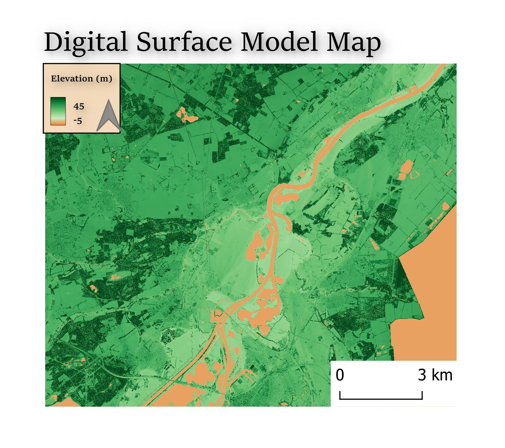

Digital Elevation Models
Is a general term for any digital representation of ground surface topography or terrain, DEMs are widely used for terrain analysis, hydrological modeling, and land-use planning. DTM represents the bare ground surface. DTMs are especially useful in engineering, land surveying, and flood modeling.
- DTM represents the bare ground surface. DTMs are especially useful in engineering, land surveying, and flood modeling.
- A DSM captures the elevation of the top surface of the Earth, including all natural and man-made objects on it, it is essential for urban planning.
My ROI
I selected a region in the south of the Netherlands, enclosed between the cities of Haelen and Swalmen. To the east of my Region of Interest (ROI) lies the German border.
I chose this area because the teacher initially suggested looking at the south of the Netherlands if we wanted to find wild rivers. I came across this part of the river Meuse (Maas), and I thought it could result in a beautiful and interesting final map.
The DSM map highlights the locations of trees and other surface features, giving the map a different texture compared to the DTM. The border with Germany is again visible due to missing data. Choosing the color palette for the DSM was more challenging, as I needed to find a compromise between aesthetics and the ability to distinguish features such as houses and trees.
In my DTM, the border with Germany is clearly visible, with missing data for that part of the image. The elevation varies throughout the region; near the river, the elevation is very low, gradually increasing to almost 30 meters at the yellow spot on the right. I chose not to add shadowing because I did not like the visual effect. For the color scheme, I selected 'viridis' because it effectively displays elevation differences, is visually appealing, and enhances the map's readability.